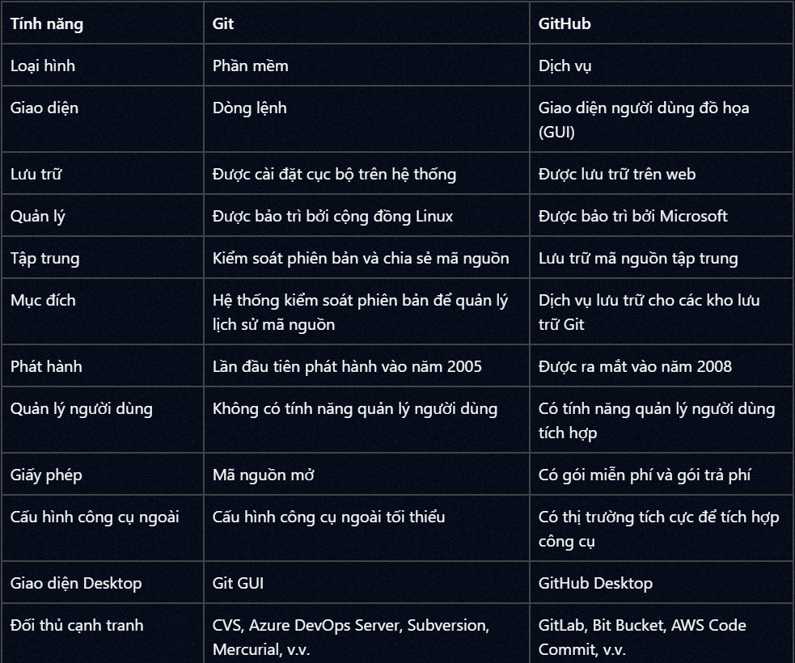

Git
Ba trạng thái của file, snapshot, các lệnh hay bị hỏi (reset, restore, amend, stash, force push) và khác biệt giữa merge với rebase.
SSH key
SSH key (Secure Shell key) là một cặp mã hóa bao gồm một khóa riêng tư (private key) và một khóa công khai (public key) được sử dụng trong giao thức SSH để xác thực và bảo mật quá trình truyền tải dữ liệu và đăng nhập từ xa vào các máy chủ. SSH key thường được sử dụng để thay thế việc nhập mật khẩu khi kết nối đến một máy chủ từ xa.
GIT và GITHUB
Git là một hệ thống kiểm soát phiên bản (Version Control System - VCS) mã nguồn phân tán, giúp theo dõi các thay đổi của mã theo thời gian.
GitHub là một dịch vụ lưu trữ kho mã nguồn (repository) sử dụng Git. Nói cách khác, GitHub là nơi bạn có thể lưu trữ và quản lý các dự án Git của mình.
https://blog.thanhnamnguyen.dev/tim-hieu-ve-git-va-github

GIT
- is an open source distributed version control system
- theo dõi sự thay đổi của mã nguồn
- gồm có 2 loại repositories:
- remote repository: repo đc lưu trên server git
- local repository: repo đc lưu tại máy tính cá nhân của developer
Snapshot
- là quá trình “chụp ảnh” project hay tạo 1 project mới với những file thay đổi
- xảy ra lúc git commit
The three states
- Khi làm việc với git, các files gồm có 3 trạng thái chính: modified, staged, commited
- Modified: bạn thay đổi file ở working directory nhưng chưa add vào staged
- Staged: Là trạng thái khi bạn đã dùng git add để đánh dấu những thay đổi sẽ được bao gồm trong lần commit sắp tới. Các file sau khi được thêm (add) sẽ được đưa vào staging area.
- Committed: File đã được lưu vào repository với git commit
- Bên cạnh đó gồm 3 khu vực:
- Working Directory: một phiên bản của project. Những file này đc pulled out từ Git directory và place on disk để chúng ta có thể thay đổi.
- Staging Area: là 1 file được lưu trong git directory, lưu trữ thông tin cho lần commit sắp tới. (file này có tên là index trong .git folder)
- Git directory (repository): nơi git lưu trữ metadata và object database của project.
Git status
Cho biết:
Các file đã thay đổi nhưng chưa được add
Các file đã được add nhưng chưa commit
Các file chưa được theo dõi
Git add
- dùng để đánh dấu và đưa các file thay đổi từ working directory vào staging area (file index trong .git folder)
- vd: git add accountService.ts, areaService.ts
Git commit
- dùng để lưu (snapshot) các thay đổi đã được đưa vào staging area vào trong Git repository
- vd: git commit -m “[CM_0001] handle happy case”
Git commit --amend
- dùng để chỉnh sửa commit gần nhất, cụ thể là sửa message của commit gần nhất, thêm bớt file vào commit đó nếu quên git add file đó
- không tạo commit mới mà thay thế commit cũ thành commit mới => git push -f
Git push
- dùng để đẩy các commit (đã lưu cục bộ) từ repository local lên repository remote
- dùng git push nếu đã thiết lập upstream giữa local và remote branch , ngược lại , dùng git push origin <name_branch>
Git restore
- git restore --staged <file>:
- dùng để loại bỏ file ra khỏi staging area nhưng ko làm mất nội dung đã chỉnh sửa
- chỉ được dùng khi file change chưa đc git commit , tức là chỉ git add
- git restore <file>: Khôi phục file về nội dung commit gần nhất
Git reset
- Gồm có 3 loại: <commit> là mã hash commit
- git reset --soft <commit>: gỡ commit nhưng vẫn giữ file change ở staging area
- git reset --mixed <commit>: gỡ commit , đưa file về trạng thái modified (back về work directory)
- git reset –hard <commit>: gỡ commit và xóa luôn thay đổi trong file
còn - - keep và - - merge
Git push --force
dùng để ép đẩy commit mới lên , ghi đè lịch sử commit
.gitignore
là tệp cấu hình đặc biệt trong Git, dùng để bỏ qua (không theo dõi) các file hoặc thư mục mà bạn không muốn Git đưa vào hệ thống kiểm soát phiên bản.
git stash
- dùng để lưu tạm thời các thay đổi trong working directory và staging area, giúp bạn có thể chuyển sang một nhánh khác hoặc làm việc khác mà không mất công việc đang dở.
- gồm các syntax sau:
- git stash: lưu thay đổi (file sửa + staged) vào stash stack
- git stash push -m “ghi chú”: lưu stash kèm mô tả “ghi chú”
- git stash list: liệt kê các stash đang lưu
- git stash pop: áp dụng stash (các thay đổi) vào code và xóa stash đó khỏi stack
- git stash apply: khôi phục lại các thay đổi đã được lưu trong stash mà không xóa stash đó khỏi danh sách.
git merge và git rebase
- Giả sử có 1 nhánh main và feature
- Điểm giống: đều gộp commit của feature vào main
- Điểum khác:
- git merge sẽ giữ lịch sử commit và tạo ra 1 commit mới nhất. Nhược điểm: lịch sử commit lộn xộn (do nó có hình như đồ thị, rẽ nhánh nhiều), khó quản lý
- git rebase sẽ làm mới lịch sử commit, vd feature có các commit mới là D và E mà nhánh main ko có, khi rebase vào main thì các commit D,E ở feature sẽ tạo 1 bản copy là D’ và E’ , nội dung giống nhau nhưng chỉ khác commit ID . D’ và E’ sẽ là commit mới nhất của main. Nhược điểm: dễ gây conflict nếu nhánh main là nhánh chung , có nhiều ng cùng làm
git protocols
- Https: một trong hai giao thức chính để kết nối đến các kho lưu trữ từ xa (remote repository), đặc biệt là trên các nền tảng như GitHub, GitLab, …
- SSH: một trong hai giao thức phổ biến nhất (cùng với HTTPS) để kết nối với remote repository như GitHub, GitLab, Bitbucket,... với độ bảo mật cao và không cần nhập mật khẩu mỗi lần thao tác.
- Bên cạnh đó việc git clone , git push , git pull để giao tiếp với remote repository phải thông qua git protocols